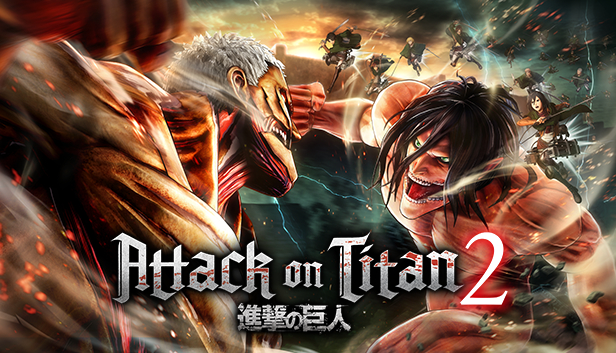

Attack on Titan, a hugely popular anime and is now available on Steam! The man-eating Titans and Eren and his allies are engaged in combat. Feel as though you are controlling the story's progression and experiencing the anime world. You can experience the anime's story with a few unique twists!
Attack on Titan is a Japanese dark fantasy anime television series that debuted on April 7, 2013, adapted from the manga series of the same name by Hajime Isayama (Japanese:, Hepburn: Shingeki no Kyojin, lit. "The Attacking Giant"). It has been broadcast on Aniplus Asia in several Asia-Pacific nations as well as NHK General TV in Japan[g]. [h] The series has been available for streaming on Crunchyroll, Funimation, Netflix, Amazon Prime Video, and Hulu in the United States and Canada. In the US, the Toonami programming block of Adult Swim has also featured Attack on Titan.
Attack on Titan follows Eren Yeager and his friends Mikasa Ackerman and Armin Arlert in a post-apocalyptic world where the last of humanity lives behind walls to protect them from enormous human-like Titans.
